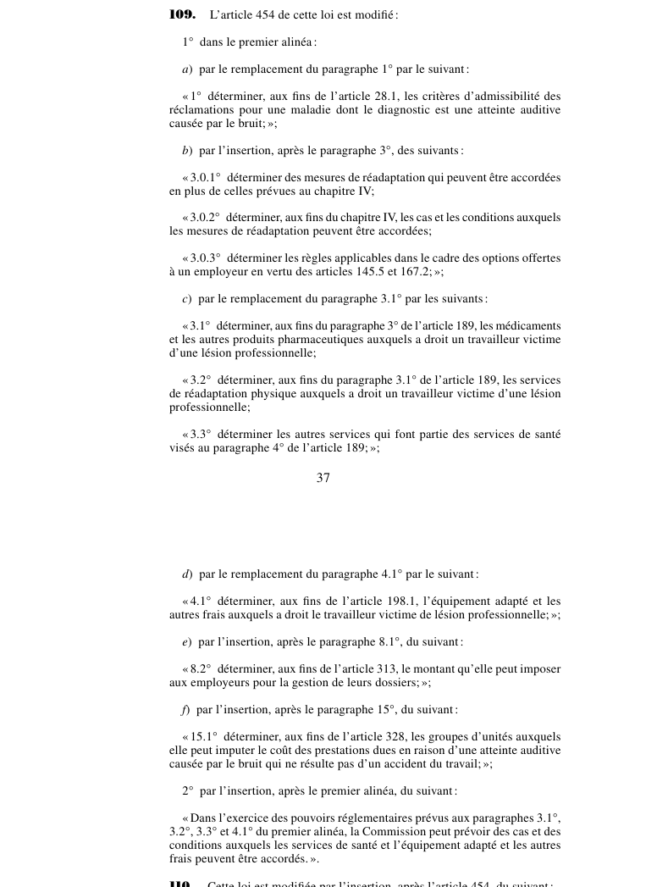

art-109-LMRSST : modifie l'art. 454 LATMP
Article modificateur de la LMRSST (L.Q. 2021, c. 27). Il s'agit d'une modification apportée à la LATMP.
- Modifie art. 454 LATMP.
📄 PDF officiel (page 37) · 🌐 LegisQuébec
Texte officiel
L’article 454 de cette loi est modifié :
1° dans le premier alinéa :
a ) par le remplacement du paragraphe 1° par le suivant :
« 1° déterminer, aux fins de l’article 28.1, les critères d’admissibilité des réclamations pour une maladie dont le diagnostic est une atteinte auditive causée par le bruit; »;
b ) par l’insertion, après le paragraphe 3°, des suivants :
« 3.0.1° déterminer des mesures de réadaptation qui peuvent être accordées en plus de celles prévues au chapitre IV;
« 3.0.2° déterminer, aux fins du chapitre IV, les cas et les conditions auxquels les mesures de réadaptation peuvent être accordées;
« 3.0.3° déterminer les règles applicables dans le cadre des options offertes à un employeur en vertu des articles 145.5 et 167.2; »;
c ) par le remplacement du paragraphe 3.1° par les suivants :
« 3.1° déterminer, aux fins du paragraphe 3° de l’article 189, les médicaments et les autres produits pharmaceutiques auxquels a droit un travailleur victime d’une lésion professionnelle;
« 3.2° déterminer, aux fins du paragraphe 3.1° de l’article 189, les services de réadaptation physique auxquels a droit un travailleur victime d’une lésion professionnelle;
« 3.3° déterminer les autres services qui font partie des services de santé visés au paragraphe 4° de l’article 189; »;
d ) par le remplacement du paragraphe 4.1° par le suivant :
« 4.1° déterminer, aux fins de l’article 198.1, l’équipement adapté et les autres frais auxquels a droit le travailleur victime de lésion professionnelle; »;
e ) par l’insertion, après le paragraphe 8.1°, du suivant :
« 8.2° déterminer, aux fins de l’article 313, le montant qu’elle peut imposer aux employeurs pour la gestion de leurs dossiers; »;
f ) par l’insertion, après le paragraphe 15°, du suivant :
« 15.1° déterminer, aux fins de l’article 328, les groupes d’unités auxquels elle peut imputer le coût des prestations dues en raison d’une atteinte auditive causée par le bruit qui ne résulte pas d’un accident du travail; »;
2° par l’insertion, après le premier alinéa, du suivant :
« Dans l’exercice des pouvoirs réglementaires prévus aux paragraphes 3.1°,
3.2°, 3.3° et 4.1° du premier alinéa, la Commission peut prévoir des cas et des conditions auxquels les services de santé et l’équipement adapté et les autres frais peuvent être accordés. ».
Texte de l’article 109 LMRSST, extrait de la couche texte du PDF officiel (page 37), sans OCR ni retouche. La capture ci-dessous et le PDF font foi.
{kind=link}

Toucher l'image pour l'agrandir🔗 Ouvrir a cette page : LMRSST.pdf : page 37
- Modifie art. 454 LATMP.
Portée et effet
Adopté dans le cadre de la réforme de 2021 modernisant le régime de santé et de sécurité du travail, l'article 109 de la LMRSST remplace art. 454 LATMP. Le texte en vigueur de la disposition visée intègre désormais cette modification ; le libellé exact figure dans la capture officielle ci-dessus. Le chapitre I de la LMRSST réforme la LATMP : comité scientifique des maladies professionnelles, réadaptation et retour au travail, indemnités, procédures et recours.
La jurisprudence porte sur la disposition modifiée, art. 454 LATMP, et non sur l'article modificateur lui-même (les décisions et leurs PDF sont rassemblés sur la page de cet article).
Voir aussi
- 🎯 Article(s) modifié(s) : art. 454 LATMP · définition : la Commis jon peut faire des réglements pour: 1° déterminer, aux fins de article 28.1, les critéres d'admis dont le diagnostic est une atteinte auditive causée par le bruit.
- 🗓️ Entrée en vigueur : 6 octobre 2022 (partiel : voir art. 313 ¶2) (voir art. 313 LMRSST)
- 📚 Chapitre : Chap. I : modifications à la LATMP
- ↑ Loi : LMRSST
Pages qui pointent ici (2)
- art-454-LATMP : réclamation Recueil législatif
- LMRSST : Chapitre I : Modifications à la LATMP Recueil législatif